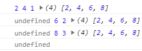
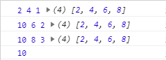
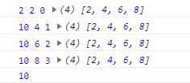

1.let ary=[1,2,3,4,5];
2.let arr=ary.filter((item,index)=>{
3. return true;//arr与ary内容相同
4. return false;//arr=[]
5. return item>3;//arr=[4,5]
6.
7. let t=Math.random();
8. return t>0.5;//新数组的内容是随机的，不确定
9.})
1.let ary=[1,2,3,4,5];
2.let boolean=ary.some((item,index)=>{
3. let t=Matn.random();
4. return t>0.5;
5.});
1.let ary=[1,2,3,4,5];
2.let boolean=ary.every((item,index)=>{
3. let t=Math.random();
4. return t>0.5;
5.});
1.let ary=[1,2,3,4,5];
2.let number=ary.find((item,index)=>{
3. return item>3;
4.});
5.//number=4
1.let ary=[1,2,3,4,5];
2.let boolean_1=ary.includes(3,0);//true
3.let boolean_2=ary.includes(3,3);//false
1.let ary=[2,4,6,8];
2.let a=ary.reduce((prev,next,index,arr)={
3. console.log(prev,next,index,arr);
4.});

1.let ary=[2,4,6,8];
2.let a=ary.reduce((prev,next,index,arr)={
3. console.log(prev,next,index,arr);
4. return 10;
5.});

1.let ary=[2,4,6,8];
2.let a=ary.reduce((prev,next,index,arr)={
3. console.log(prev,next,index,arr);
4. return 10;
5.},2);

1.let ary=[1,2,3,4,5];
2.ary.a=6;
3.for(let value of ary){
4. console.log(value);//不会循环到a
5.}